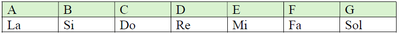

Hay acordes que todos deberíamos saber tocar, para acompañar a una voz o simplemente para tocar porque sí y pasarlo bien. Aquí encontrarás 30 acordes en total, divididos en acordes mayores, menores y de séptima de dominante y disminuidos. De momento, solo nos centraremos en algunos de los acordes mayores, menores y un ejemplo de séptima de dominante.
1. Acordes mayores
Un acorde mayor es un acorde que contiene una nota fundamental, una tercera y una quinta. Si tiene estas tres notas se le llama acorde triada. Estos acordes de guitarra, junto con los acordes menores, son los acordes más básicos y a la vez más importantes dentro de la música.
Estos acordes mayores se suelen representar con la letras del sistema anglosajón en mayúsculas, constituyendo así el cifrado americano.
Dichas letras son las siguientes:

Ejemplo: C -> Do Mayor.
Trabajaremos de la tabla las posiciones de los siguientes acordes mayores:
C (Do mayor), D (Re mayor), E (Mi mayor), G (Sol mayor), A (La mayor).
2. Acordes menores
El acorde menor por su parte también tiene una fundamental, una tercera menor y una quinta justa. Su sonoridad es algo más "apagada" que la de los acordes mayores. Según el cifrado americano, se representan con la letra en mayúscula de la nota en el sistema anglosajón y una "m" minúscula.
Ejemplo: Dm -> Re menor
Trabajaremos de la tabla las posiciones de los siguientes acordes menores:
Dm (Re menor), Em (Mi menor), Am (La menor).
3. Acordes de séptima de dominante
Están formados por la fundamental, la tercera mayor, la quinta justa y la séptima menor. Su sonoridad es más tensa, buscando una estabilidad en el siguiente acorde. Estos se representan con la letra en mayúscula de la nota en el sistema anglosajón acompañada de un 7.
Ejemplo: A7 -> La 7
De este tipo de acordes solo veremos uno por el momento: G7 (Sol 7).